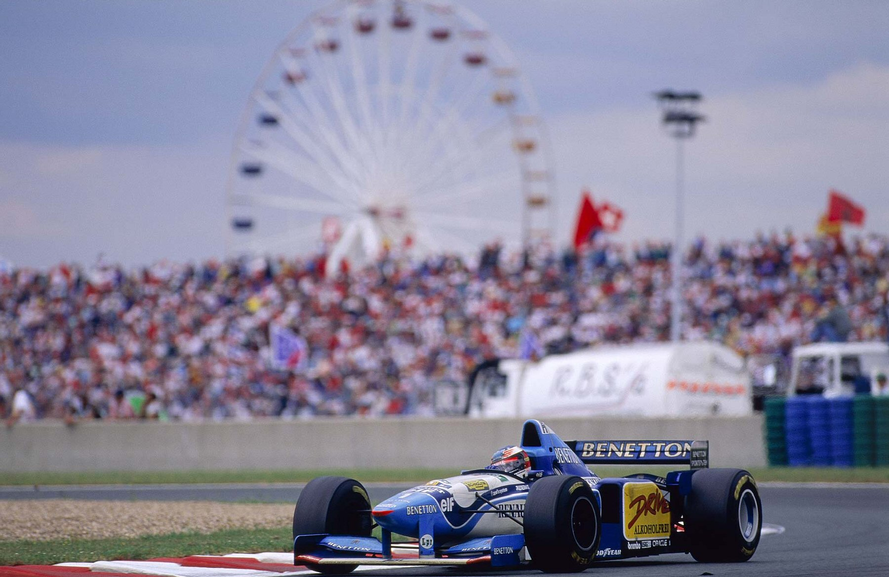
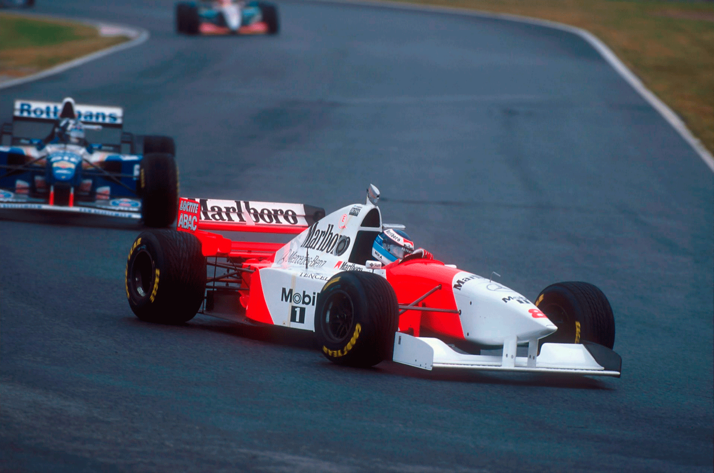
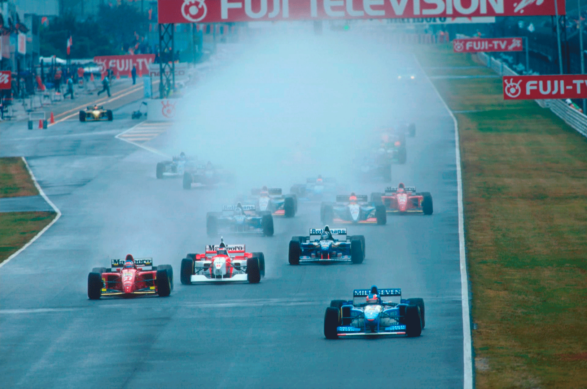
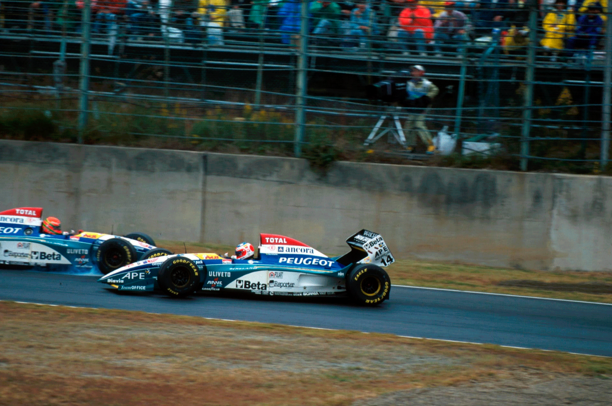
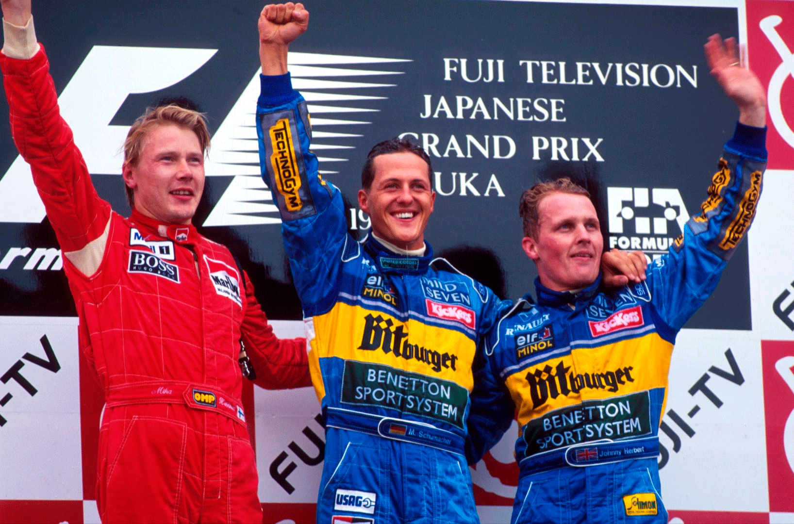

SHOW DE ALESI, 9ª VITÓRIA DE SHUMACHER E TÍTULO PARA A BENETTON

Alesi fabuloso na pista escorregadia. Schumacher larga na pole pela primeira vez desde o Canadá, iguala recorde de Mansell de 9 vitórias. Humilhação para a Williams: dois pilotos saem da pista. Excelente retorno de Hakkinen na segunda posição. Herbert é terceiro e ajuda a confirmar o título para a Benetton. Barrichello bate em Irvine e abandona. Lamy, 11º:
Por Francisco Santos
Quem acusa a F1 de ser monótona? O GP do Japão, em Suzuka, tem sempre sido fértil em grandes espetáculos e emoções. Nem sempre esportivos, mas sempre premiando os fãs japoneses com muita dose de adrenalina. Este GP não fugiu à regra. Foi um caso de talento e de humilhação. Ambos antológicos. Com pista escorregadia, é certo que Alesi vai sempre dar um show de pilotagem, levando a Ferrari 412T2, já por si um chassis com excelente aderência mecânica, a performances jamais sonhadas com pista seca. Foi isso que aconteceu no Nurburgring e agora em Suzuka, ainda por cima uma pista para grandes pilotos, com suas longas e rápidas curvas, a maioria sem visibilidade do ponto de tangência. Com pista molhada no domingo, Alesi, que largou da primeira fila, até nem largou muito rápido, mas não só foi abrindo de Hakkinen, como não se distanciou muito de Schumacher.
Stop & Go das Ferrari
No entanto, ambas as Ferrari seriam penalizadas com stop & go, e Alesi veio logo à box, à 4ª volta cumprir a penalização, voltando em 10°, atrás de Frentzen. Assistiu-se depois a uma das mais fantásticas exibições de um piloto. Logo a seguir, com a pista secando um pouco, mas ainda perigosa pois fora do traçado ainda estava molhada, claro que Alesi foi o primeiro a trocar para slicks. Voltou à pista pela 2ª vez, mas agora em 15°. Pouco depois tem um desentendimento com Lamy, sai da pista, roda em 360 e segue seu ritmo infernal, ganhando 7s por volta a Schumacher! A sua frente estava Hill, e aí assistiu-se a uma ultrapassagem exemplar e que marca a enorme diferença entre um piloto com talento e garra e outro, sem esse dom natural e muito desmotivado: na freada para a chicane, que no passado já fora palco de grandes emoções entre Prost e Senna, descoorimos agora como é possível passar por fora, sem sequer tocar ou por em perigo o outro piloto. Alesi simplesmente deixou a freada para limites jamais pensados e contornou o Williams como se ele estivesse parado, tomando dele a trajetória mais conveniente e limpa. Na 24ª volta, Alesi ja estava apenas a 2,4s de Schumacher, e previa-se uma emocionante segunda metade da corrida. No entanto, na volta seguinte, o diferencial da Ferrari quebrou, e o show acabou.

Williams patéticos
Frank Williams ainda tinha esperanças de revalidar seu tricampeonato de construtores, mesmo chegando a Suzuka com 21 pontos atrás da Benetton. Mas, na F1 não dá para caçar com gato… Realmente seus pilotos tiveram atuações patéticas neste fim de semana. Na corrida, depois de nitidamente batido por Alesi, Hill foi o bobo da festa, na 36ª volta saiu da pista sozinho, na longa esquerda Spoon (colher). Coulthard cometeu o mesmo erro no mesmo local, volta à pista e tem um acidente inédito: a brita acumulada nos pontões laterais cai para o asfalto e o carro derrapa e roda em cima dela, levando o piloto ao abandono. Na volta seguinte, 40ª, Hill repete a besteira e sai na mesma Spoon, mas desta vez fica atolado na caixa de brita. Poderá, eventualmente, haver a desculpa de que Diniz terá derramado muito óleo naquele pedaço da pista quando seu motor quebrou na 32ª volta, o que terá também provocado a saída de pista de Blundell logo depois da primeira “performance de off-road” de Hill. Mas, temos de nos lembrar que isto é a F1, e que seus pilotos têm obrigaçao de saber controlar situações extremas. Principalmente depois de saberem que há um problema nesse local da pista.
Japoneses menos fanáticos
Junto com Spa e Interlagos, este circuito de Suzuka é um dos mais desafiantes e interessantes do calendário. Projetado por quem também desenhou Zandvoort, este traçado proporciona as mais variadas oportunidades de ultrapassagem e é um verdadeiro teste à técnica de pilotagem e à bravura dos pilotos. Embora o GP do Japão continue a atrair a maior bilheteria do calendário, o entusiasmo do povo japonês pela F1 diminuiu um pouco. Ja nao é a mesma loucura da época de Senna, o maior ídolo da F1 para os japoneses. A louca procura por ingressos para o ano seguinte, em que chegava a haver mais de 1 milhão de solicitações, está mais devagar. O fanatismo nao é mais o mesmo. Há quem diga que a juventude japonesa está agora dividindo seu interesse pelo futebol.

OS TREINOS
Os treinos foram bem movimentados logo desde o primeiro dia, não só com mudanças bruscas de tempo, como muitos acidentes. Depois do “kartodromo de F1” de Aida, encontrar uma pista tão desafiante e rápida como esta, não é fácil. Logo no primeiro treino livre começou o domínio de Schumacher, que viria a fazer o melhor tempo em todas as sessões à excessão do treino livre de sábado, em que a grande surpresa foi Hakkinen com a melhor marca, seguido de Irvine. Na 1ª qualificação, Blundell saiu da pista mesmo antes de completar uma volta lançada. No dia seguinte de manhã bateu ainda com mais força, não podendo andar à tarde, pelo que alinhou no último lugar do grid, sem tempo.
Qualificações emocionantes
As duas qualificações foram duramente disputadas, com diferenças mínimas entre os ponteiros. No início de sessão de 6ª feira, a diferença entre os 3 primeiros tempos era de apenas 0,06s, e essa disputa só foi desequilibrada quando Schumacher fez uma volta-canhão que lhe deu a pole provisória com menos 0,604s de Hill, seguido de Hakkinen. No sábado, depois de Irvine ter iniciado as melhores voltas, a única melhoria de tempo em relaçao a véspera era de Berger nos primeiros 15 minutos e pouco se passou até 9 minutos do final, com a violenta batida de Suzuki. Depois de recomeçada, a sessão esquentou, com uma briga entre Hakkinen, Hill, Coulthard e Alesi para os primeiros tempos, na qual Schumacher interveio a 13s do final para ditar sua lei e fazer sua primeira pole desde o GP do Canadá, baixando seu tempo da véspera em 0,405s e batendo Alesi por 0,865s! Dos sete primeiros apenas os Williams não melhoraram os tempos da véspera. Hakkinen só foi tirado da 1ª fila nos últimos segundos, destaque pela extraordinária melhoria tanto do chassis McLaren como do motor preparado por Mario Illien. Barrichello, na 5ª fila, e Lamy, novamente o melhor piloto com motor Ford ED, com o 16° tempo, estavam confiantes para a corrida.

A CORRIDA
Com corridas como estas últimas, a Formula 1 recupera rapidamente sua popularidade. Espetáculo foi que não faltou em Suzuka durante todo o fim de semana. Antes mesmo do show de Alesi e das piruetas dos palhaços da Williams, a prova começou logo inusitada, com uma McLaren no último lugar do grid, Blundell, que se recuperara da forte batida da véspera, mas que não tinha feito tempo. Pior ainda aconteceu a Moreno que, primeiro, teve seu Forti arrastado para o pitlane, de onde largou. Não foi além da 1ª volta com o novo câmbio semi-automático. Foi preciso menos que isso para Morbidelli ter problemas: na 1ª curva, Wendlinger dá um toque na traseira de sua Arrows e ele roda e fica na brita.
Irvine em casa
Com toda sua experiência da temporada de F3000 japonesa, Irvine fez uma largada fabulosa e uma primeira volta brilhante, em 6° lugar, depois de passar Berger por fora na 1ª curva. Aliás, toda a sua corrida foi excelente, terminando em 4° apesar das batidas que levou de Barrichello e de Frentzen, esta última provocando-lhe uma rodada.
Tempo estranho
Com pista parcialmente molhada, todos os carros largaram com pneus de chuva. No entanto, as regulagens de chassis e aerodinâmicas variaram muito, com alguns optando por uma regulagem mista e outros apostando totalmente na chuva, que se podia prever voltasse a cair. Quem optou pelo meio termo acertou. Quem teve azer com o estado misto da pista foi Rubinho Barrichello: na 15ª volta, quando tentava passar Irvine para o 6° lugar, colocou duas rodas do Jordan na zona molhada da pista, rodou, e deu um toque na traseira do carro do colega de equipe, batendo depois no muro e abandonando.

Lamy em dois casos
Lamy foi protagonista de dois episódios que podiam ter tido desfechos desagradáveis, mas que felizmente acabaram bem: primeiro quando houve um desentendimento com Alesi e este deu uma espetacular rodada na saída da chicane, e, depois, quando ele próprio rodou no final da prova, na chicane, depois de sair pela zona de escape quando se defendia dos ataques de Wendlinger. “Sabia que Alesi vinha me ultrapassar e fiz a minha trajetória normal porque esperava que ele me passasse por dentro”, lembrou Lamy. “Por isso nem o vi à minha esquerda. Na minha saída pressionei demais porque o Wendlinger estava andando mais rápido que eu. Só que os freios do Minardi estavam mal regulados, e eu rodei”.Motores japoneses pontuam
Haverá que destacar a prova dos dois McLaren. Se em Monza, Hakkinen herdou o 2ª lugar depois da hecatombe dos favoritos, aqui apenas beneficiou do abandono de Alesi, já que as saídas dos dois britânicos da Williams foram provocadas por erros deles, e, isso, não pode desmerecer a performance do finlandês. Quanto a Blundell, largar do último e chegar a lutar pelo 6° com Salo, é meritório. A McLaren está prestes a voltar aos seus tempos vencedores. Por último, foi bom para a Honda e a Yamaha que dois de seus carros pontuassem: Panis, em fase de querer agradar a Walkinshaw para reter o emprego em 4º, e Salo, um conhecedor desta pista depois de sua campanha de F3000 japonesa. □